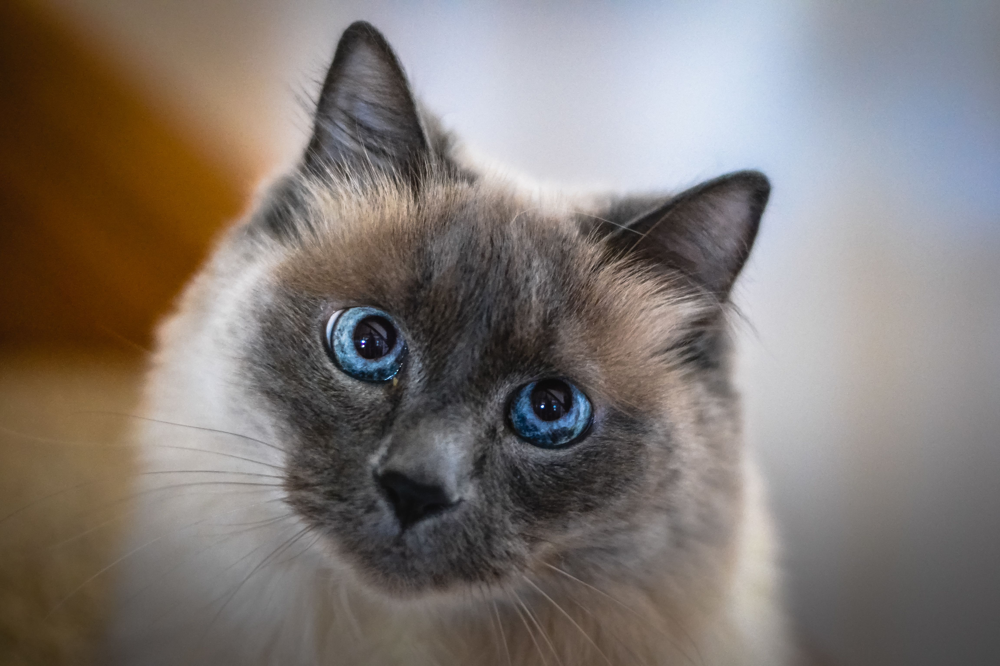

Đặc điểm hình dáng mèo Xiêm
Mèo Xiêm truyền thống
Thân hình: Thân hình dài và đầy đặn, cấu trúc xương to, ngực nở, vai rộng.
Chân: Chân dài và chắc khỏe, bàn chân to và tròn.
Đuôi: Đuôi dài và thon, có xu hướng cong lên.
Đầu: Đầu tròn trịa, trán rộng, má phúng phính.
Mũi: Mũi to và ngắn.
Tai: Tai to và dựng đứng, có hình tam giác.
Mắt: Mắt to và tròn, màu xanh biếc hoặc xanh ngọc.
Lông: Lông ngắn, mềm mượt, có màu đen sẫm ở các vùng tai, mặt, chân và đuôi.
Mèo Xiêm hiện đại
Thân hình: Thân hình gọn và thanh mảnh hơn, cấu trúc xương nhỏ hơn.
Chân: Chân dài và thanh mảnh, bàn chân nhỏ và thuôn dài.
Đuôi: Đuôi dài và thon, có xu hướng cụp xuống.
Đầu: Đầu dài, có nhiều góc cạnh, trán hẹp, má thon.
Mũi: Mũi nhỏ và dài.
Tai: Tai to và dựng đứng, có hình tam giác.
Mắt: Mắt to và tròn, màu xanh biếc hoặc xanh ngọc.
Lông: Lông ngắn, mềm mượt, có màu đen sẫm ở các vùng tai, mặt, chân và đuôi.
Tính cách
Thông minh
Mèo Xiêm là một trong những giống mèo thông minh nhất trên thế giới. Chúng có thể học được rất nhiều mệnh lệnh và trò chơi. Mèo Xiêm cũng rất nhạy cảm với cảm xúc của con người và có thể hiểu được những gì chủ nhân của chúng đang nói.
Tình cảm và trung thành
Mèo Xiêm rất tình cảm với chủ nhân của chúng. Chúng thích được vuốt ve, ôm ấp, chơi đùa cùng chủ nhân và rất trung thành và luôn ở bên cạnh chủ nhân của chúng.
Thích chơi đùa
Mèo Xiêm là những chú mèo rất thích chơi đùa. Chúng thích chạy nhảy, leo trèo và đuổi bắt đồ chơi, rất vui vẻ và luôn mang lại tiếng cười cho chủ nhân của chúng.